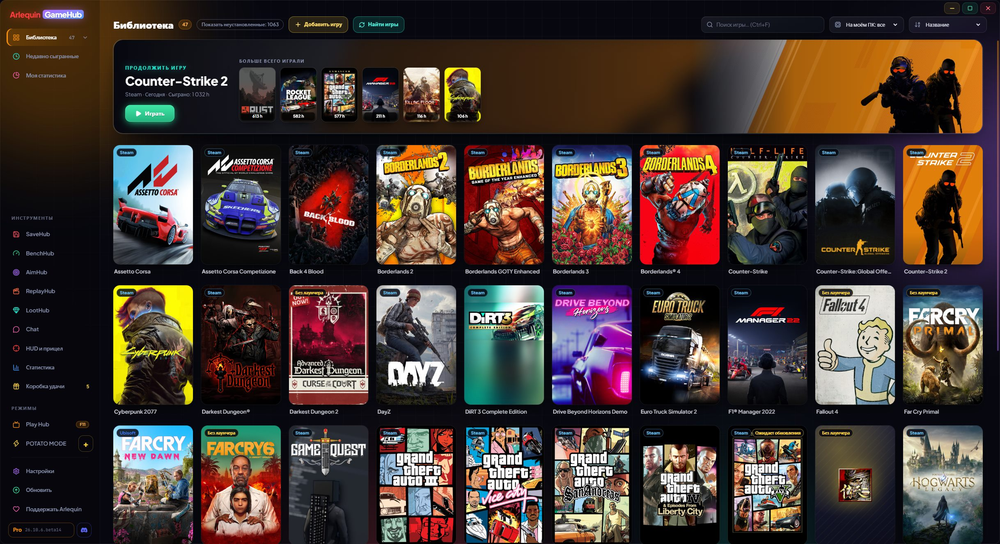

Вся библиотека в одном месте
Steam, Epic, GOG, Xbox, Ubisoft, EA, Battle.net, Amazon, Rockstar и игры без лаунчера — вместе.
GameHub смотрит, что уже есть на вашем ПК: папки и файлы, которые хранит лаунчер каждого магазина. Так он находит установленные игры и те, что у вас есть, но не установлены, с обложками и сыгранными часами. Часы считаются, даже если вы запускаете игру из её лаунчера.
На боковой панели «Библиотека» открывает ваши магазины с числом игр в каждом (и те, чьё приложение установлено, даже если игр пока нет). Можно сортировать по названию, по последнему запуску, по часам или по размеру, мгновенно искать и смотреть, во что вы играли недавно.
Игры без лаунчера (эмулятор, игра с itch.io…) добавляются кнопкой «Добавить игру», или вы указываете GameHub папки с отдельными играми, и он находит их сам. Он ищет официальную обложку из Steam и для игр из других магазинов, добавленных вручную или снятых с продажи; если её нет, берёт значок игры, а вы всегда можете поставить свою картинку.
Игра, которая есть в нескольких магазинах или в одной папке, показывается один раз. А если Steam обновляет игру, это видно на её карточке («Обновление 45%» или «Ожидает обновления»).
В бете обновления Steam и загрузки Epic (установка или обновление) показывают внизу карточки, на месте кнопки «Играть», реальный %, скорость и оставшееся время; по нажатию открывается Steam или Epic. Если загрузка не движется, появляется «На паузе».
В бете новые магазины: Riot (League of Legends, VALORANT, TFT…), HoYoPlay (Genshin, Star Rail, Zenless…), Wargaming (World of Tanks…), Ankama (Dofus, Wakfu…) и Gameforge (Metin2, NosTale…), с часами каждого персонажа Dofus. Консольные игры из GOG Galaxy (PlayStation, Nintendo) получили свой раздел и их можно скрыть, а в Настройках → Библиотека можно убрать ненужные магазины и выбрать их порядок на боковой панели.
Если затесалось что-то, что не игра (программа, сервер…), вы убираете это, и GameHub запоминает. Вернуть можно в Настройки → Библиотека.
Он никогда не спрашивает пароль от магазинов: для игры он запускает каждую игру через её лаунчер, как будто вы открыли её сами.
Игры Xbox / Microsoft Store и Ubisoft видны, даже если не установлены, а игры Game Pass можно скрыть. Серии сортируются по дате выхода, а обложки и фоны сохраняются на вашем ПК: они появляются мгновенно, даже без интернета.
Как пользоваться
- Откройте и подождите несколько секунд: игры появятся сами.
- Двойной клик или кнопка «Играть» (под обложкой), чтобы запустить игру.
- «Показать N не установленных» показывает и неустановленные.
- «Найти игры» сразу заново проверяет ваши магазины.
- В бете персонажи Dofus разделены по серверам: при закрытии игры GameHub определяет, на каком вы играли, или спрашивает; карточки сгруппированы по серверам, а часы можно перенести на другой сервер.

Попробуете?
⬇ Скачать напрямую 🛍️ Скачать в Microsoft StoreWindows 10 и 11 (64 бита) · Бесплатно · Обновляется сам